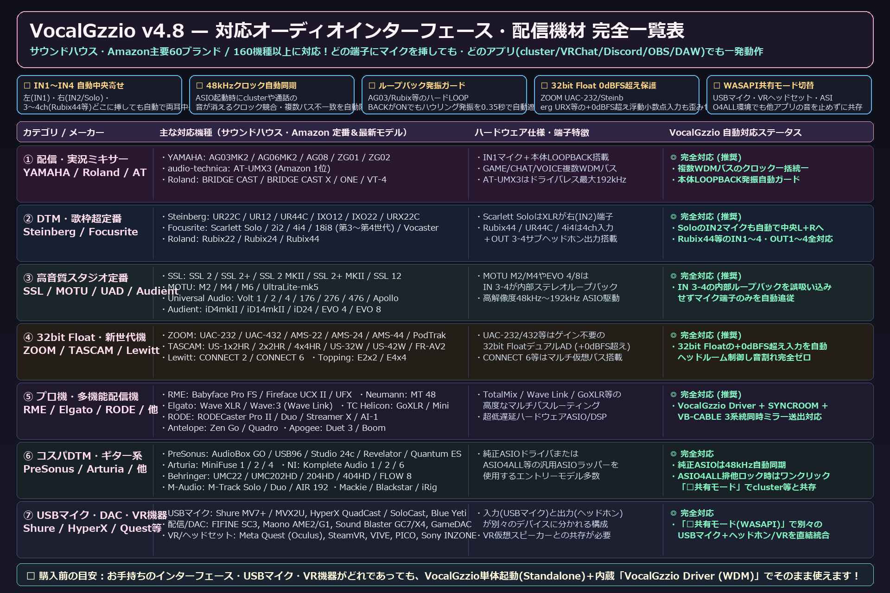

VTuber・Vライバー・歌い手向け OBS歌枠＆宅録 完全ガイド
DAWも複雑なVST設定も不要！
OBS歌枠配信＆「歌ってみた」完パケ録音を1画面で完結させる方法
「歌いたい曲のインスト音源がない」「カラオケ音源のキーを変えたいけれどピッチ補正と両方設定するのが大変」「曲が終わって雑談MCに入るときリバーブを切り忘れる」「サビや歌い終わりをもっと盛り上げたい」——そんな歌枠・宅録の悩みをVocalGzzio v5.0.0がすべて解決します。
1. OBS 歌枠配信がたった3ステップで完成する理由
- 専用仮想ドライバ「VocalGzzio Driver (WDM)」が標準同梱：別途VB-CABLEやVoiceMeeterをインストールする必要はありません。インストーラーを実行するだけで、OBSの「マイク／補助音声」に
ライン (VocalGzzio Driver (WDM))が現れます。 - 🎵内蔵カラオケ伴奏プレイヤー ＆ ✨1クリック伴奏ボーカル除去 ＆ キー変更（±6半音）：お手持ちの音源（WAV / MP3 / FLAC / OGG / AIFF）をアプリ内で直接再生でき、「✨ボーカル除去」で原曲からその場でカラオケ伴奏化！さらにキー（-6〜+6半音）を変更すると、ボーカル側のピッチ補正・5人ハモリのキーも自動で連動します。
- 🌊声優先オートダッキング ＆ 🔥サビ1クリック華やか演出 ＆ 👏4種ライブSE：あなたが歌い出した瞬間だけ伴奏や空間IR残響が自動で少し下がり、サビでは「★サビ盛」で声の広がりが一気に開花！歌い終わりには「♪拍手」「✦キラ」「◉ドラム」「♦ベル」を即座にポン出しできます。
2. 歌枠ライバー・歌ってみた宅録者に選ばれる6つの神機能
| 機能名 | 解決できるお悩み |
|---|---|
| ✨1クリック伴奏ボーカル除去 | インスト音源が手元にない曲でも、原曲を読み込んで1クリックで低音ベースと高域ステレオ感を残したままボーカル帯域だけを引き算して即カラオケ化できます。 |
| 💿-14 LUFS完パケMIX＋Wet＋Dry 3種同時保存 | 録音や「⏪直前30秒さかのぼり保存」で、YouTube基準（-14 LUFS）に自動マスタリングされた「①声＋伴奏の完パケMIX」「②完成ボーカル（Wet）」「③MIX師提出用の素の声（Dry）」を同時書き出しします。 |
| 🔥サビ1クリック演出 ＆ 👏4種ライブSE | フッター右の「★サビ盛」でサビの声を華やかに広げ、4種の効果音パッド（拍手歓声・キラキラ・ドラムロール・ベル）でワンオペ歌枠を盛り上げます。 |
| 🎤歌枠 ⇄ 💬雑談MC 瞬間切替 | 曲が終わってコメント読み・雑談に入る瞬間、1クリックで歌枠設定を壊さずにリバーブ・ディレイ・ハモリを一時オフにして聞き取りやすいトーク声へ切り替えます。 |
| 🎯5秒AI声質ターゲット診断 | マイクに向かって5秒歌うだけで声の重心・明るさ・倍音を分析し、5つの理想ターゲット（✨透明感ウィスパー／🎤王道アイドル／🔥パワフルロック／🌙深みイケボ／🎧耳元ASMR）へ2Dオーブを自動調律します。 |
| 🛡絶叫セーフティガード ＆ 😷咳ミュート | 突発的な叫び声を0.2msアタックで-0.3dBFS以内に保護し、咳払いやくしゃみをポップノイズ皆無（8msクロスフェード）で即座に無音化します。 |
3. 無料体験版（0円）と製品版（2,500円・買い切り）の違い
無料体験版でも音質・超低遅延エンジン・全エフェクト・OBS直結ドライバ・v5.0の全機能を100%そのままお試しいただけます。製品版（2,500円・買い切り）へアップグレードすると、①60秒ごとの0.6秒音量低下の完全解除、②自分専用セッティング・ノイズ学習の自動保存＆読込（起動0秒でいつもの声で歌える）、③YouTube収益化・スパチャ歌枠・案件配信・歌ってみた動画投稿などの商用利用ライセンス（PC3台まで・今後のアップデート無償）がすべて解禁されます。
4. これから機材を揃える方へ：予算・用途別おすすめオーディオインターフェース目安
『VocalGzzio v5.0.0』はサウンドハウス・Amazonで販売中の主要60ブランド・160機種以上に対応しています。
